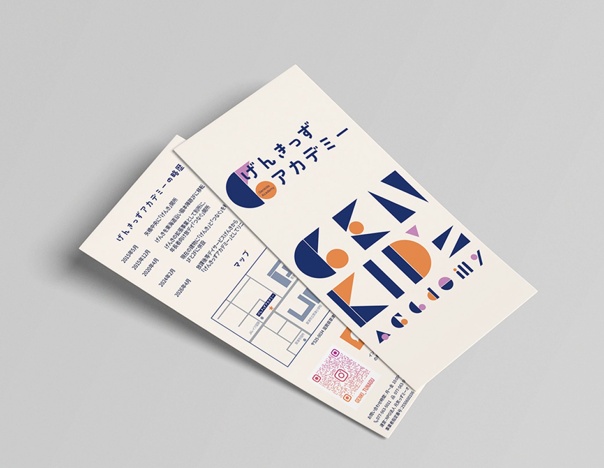
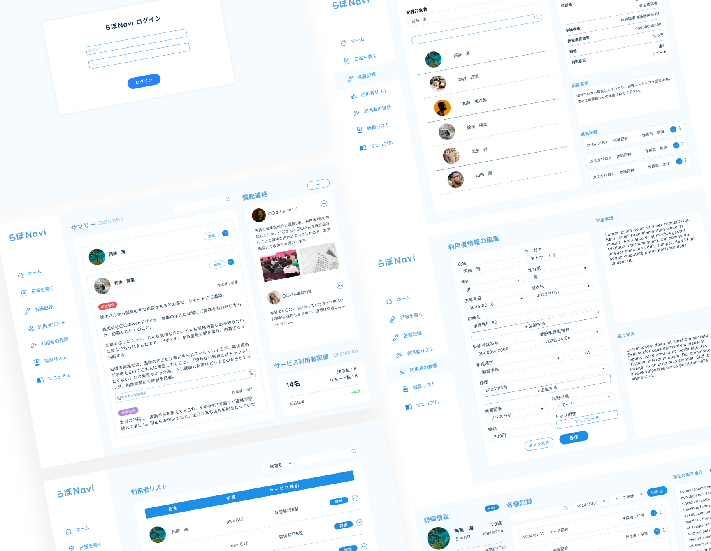
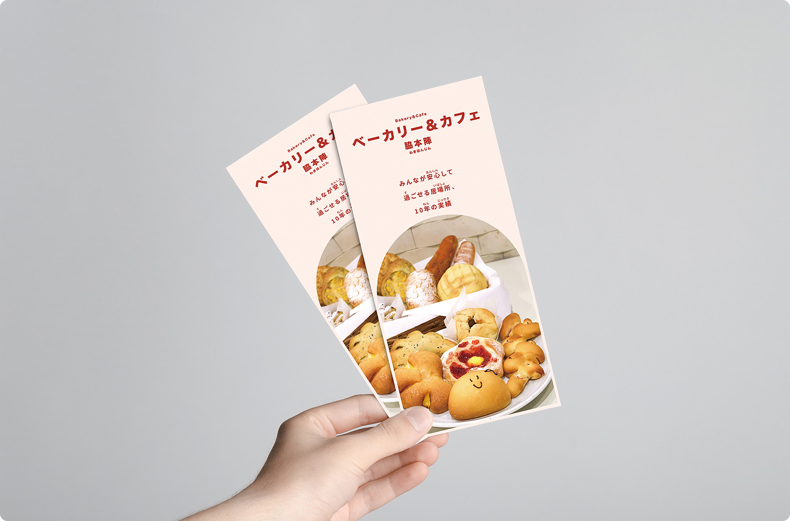
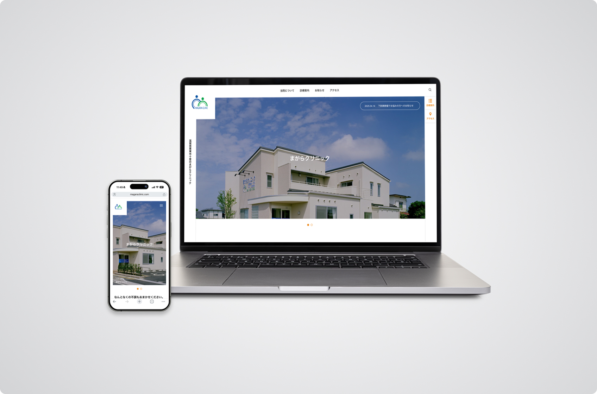
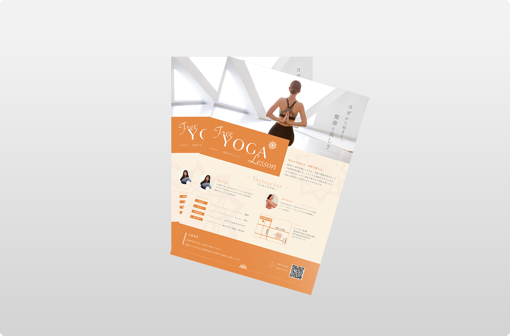

デザイン・システム開発
同業ならではの視点
Plusらぼは、福祉事業所として運営しており、就労支援分野における制度設計や実態を深く理解しています。一般のデザイン会社やシステム会社では見えにくい「現場の課題」を起点に、本当に使いやすいデザインや仕組みを提案することができます。
また、スタッフ自身が「デザイン」や「システム」を実務として行っており、技術の質にもこだわっています。
デザイン
チラシや名刺、Webサイトなど、さまざまなデザインに対応しています。AdobeやFigmaを使い、アクセシビリティ（使いやすさ・見やすさ）に配慮したシンプルで伝わりやすいデザインを得意としています。


システム開発
業務の効率化や記録管理システムの開発などに対応しています。Plusらぼのスタッフが直接関わるため、支援現場の視点でIT化を進めることができます。特定のツールに縛られず、事業所の状況に合わせた柔軟な提案が可能です。



よくある質問
福祉現場の業務フローに合わせたシステム開発は可能ですか？
はい、可能です。私たちは自らも福祉事業所を運営しているため、現場特有の記録業務や報告事務の負担を深く理解しています。パッケージソフトでは手が届かない「あと一歩」の効率化を、現場目線で形にします。
Webサイト制作では、どのような効果が期待できますか？
アクセシビリティ（見やすさ・使いやすさ）に配慮したデザインはもちろん、利用希望者やそのご家族、相談支援専門員の方に安心感を与える情報設計を行います。
予算が限られているのですが、相談に乗ってもらえますか？
もちろん可能です。
IT導入補助金などの公的支援を活用した開発はできますか？
補助金や助成金の活用を視野に入れたご提案も可能です。採択実績に基づき、申請に必要な要件を満たす構成案の作成などをサポートいたします。※最新の公募状況により異なりますので、まずはご相談ください。
ITに詳しくないスタッフばかりなので、導入後が不安です。
現場スタッフ様向けの操作研修など、誰もが迷わず使えるようになるまでの定着支援を大切にしています。